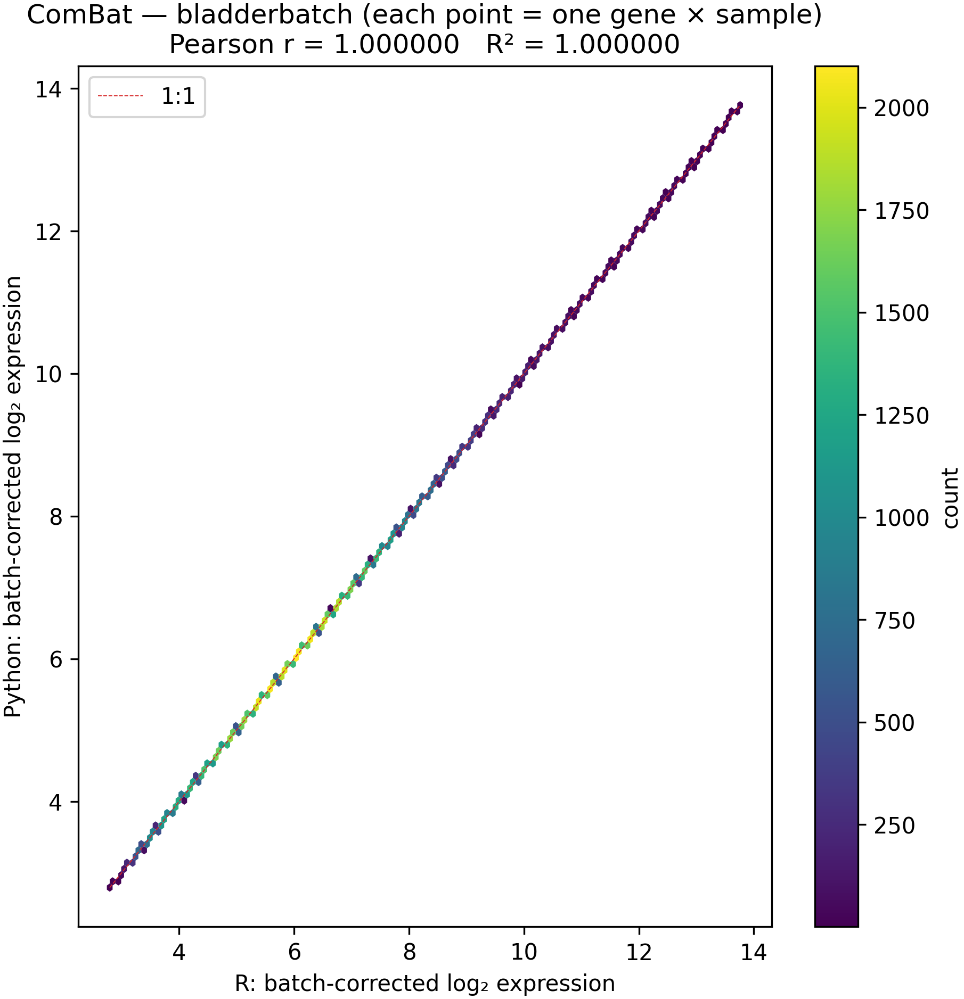
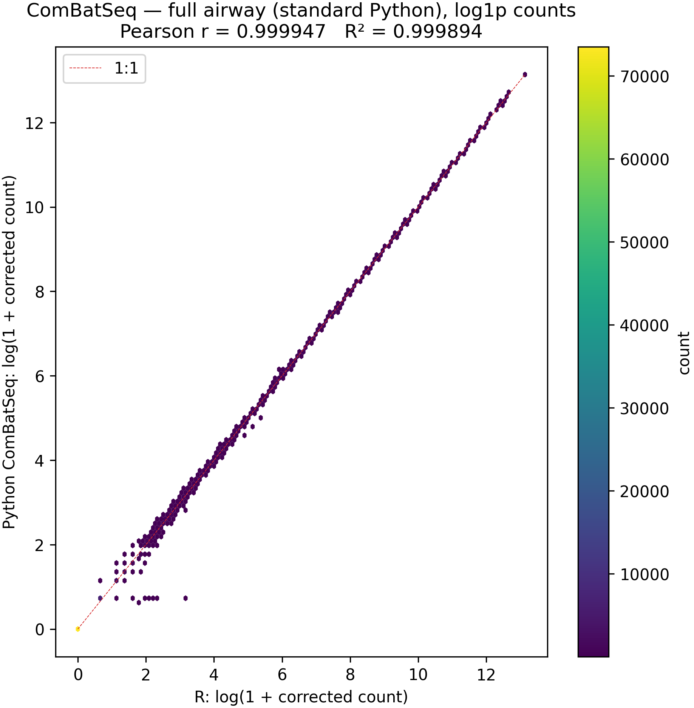
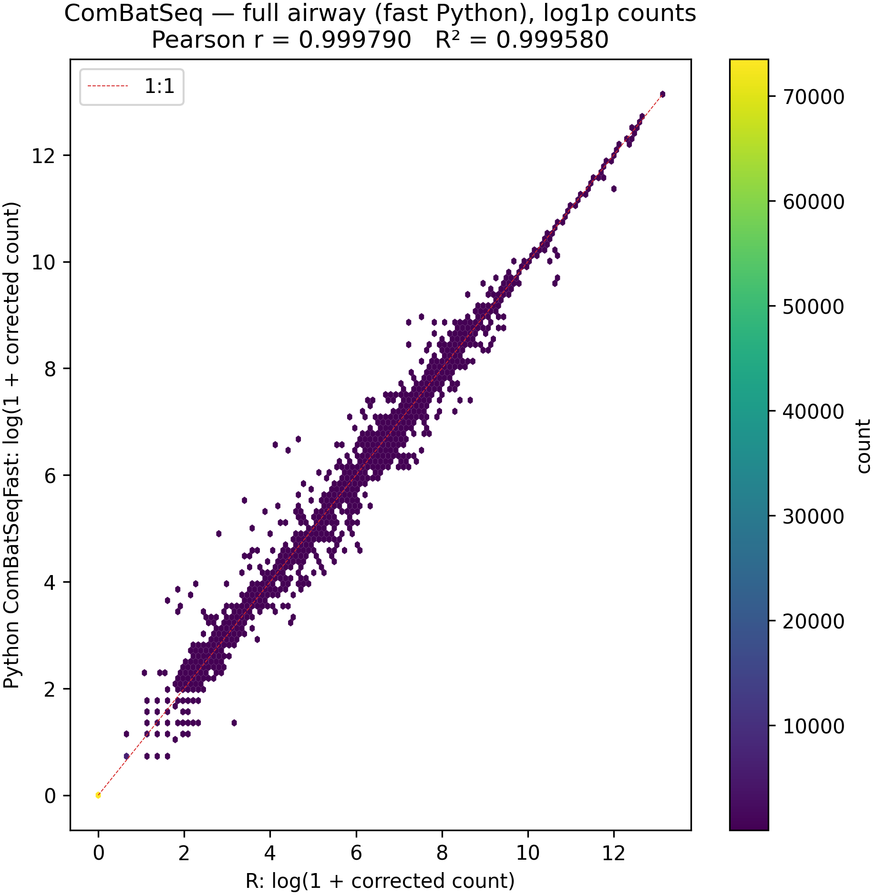
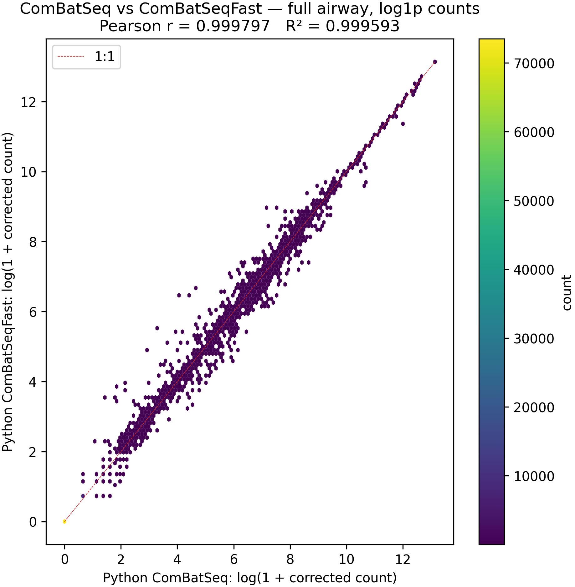

Numerical parity of md_combat with Bioconductor sva on microarray and RNA-seq reference data
| Type | Application note |
| Date | 3 April 2026 |
| Figures | figures/parity/ (regenerate: examples/combat_comparison.ipynb) |
Purpose. Document numerical agreement between the Python package md_combat and Bioconductor sva (
ComBat,ComBat_seq) on full bladderbatch and full airway benchmark data, with precomputed R benchmark references intests/expected/.
Abstract
Background. Batch effect correction is widely performed with the Bioconductor package sva (ComBat, ComBat_seq). A Python reimplementation, md_combat, is useful for Python-native pipelines and services.
Methods. We compared md_combat to outputs of sva::ComBat and sva::ComBat_seq on the same bundled datasets used for package testing: the bladderbatch microarray study (22 283 probes × 57 samples) and the airway RNA-seq experiment (64 102 genes × 8 samples). R reference matrices were precomputed with Rscript scripts/generate_expected.R and stored as Parquet benchmark reference files under tests/expected/. Agreement was quantified by the maximum absolute element-wise difference (ComBat) or, for ComBat-seq, by Pearson r and R² = r² on log(1 + corrected count) for every aligned matrix element after flattening (the same transform is used for RNA-seq hexbin figures so density is not dominated by zeros and small counts). RNA-seq plots subsample up to 120 000 gene × sample pairs for visualization. Wall-clock time was measured for full-airway fits on one workstation.
Results. ComBat: maximum |Python − R| = 6.22 × 10⁻¹⁵, r = 1.000000. ComBat-seq on full airway vs R benchmark reference on log(1 + count): standard Python r = 0.999943 (R² = 0.999886); ComBatSeqFast r = 0.999773 (R² = 0.999546); both recomputed 2026-11-05 after a fix, see §3.2. Standard vs fast Python on log(1 + count): r = 0.999786. Standard ComBat-seq required 401.9 s (6.70 min); ComBatSeqFast required 1.8 s (~224× faster) on the same hardware.
Conclusion. md_combat reproduces R ComBat at machine precision. ComBat-seq agrees with R at high correlation on log-transformed corrected counts; the fast solver remains close to the standard path on that scale while offering large speed gains. Figures and commands below support independent reproduction.
Keywords: batch effect; ComBat; ComBat-seq; sva; Python; reproducibility
1. Introduction
Unwanted batch variation confounds high-throughput genomics. Johnson et al. introduced ComBat for continuous expression data (1); Zhang et al. extended the framework to RNA-seq counts as ComBat-seq (2). The reference implementation lives in the Bioconductor package sva (3). md_combat is a Python translation intended for parity with sva on representative data while remaining testable without an R runtime in continuous integration. This application note documents quantitative agreement and runtime on two standard datasets bundled with the package.
2. Materials and methods
2.1 Software
- R reference: sva
ComBat/ComBat_seq, as executed when generating benchmark reference outputs. The parity notebook reported R version 4.5.3 (2026-03-11) on the machine used for the run summarized here. - Python: md_combat (repository version under test), Python 3.11+, NumPy, pandas, SciPy, statsmodels; ComBat-seq standard path uses per-gene
statsmodelsnegative binomial GLM with Nelder–Mead; fast path uses a batched Newton–Raphson solver (seeIMPLEMENTATION.md).
2.2 Datasets
| Analysis | Source | Dimensions | Outcome scale |
|---|---|---|---|
| ComBat | Bioconductor bladderbatch (exprs(bladderEset)) |
22 283 × 57; 5 batches | log₂-normalised microarray expression; ComBat output on the same scale |
| ComBat-seq | Bioconductor airway (bundled Parquet) | 64 102 × 8; cell line as batch, dexamethasone treatment as covariate | Integer counts adjusted to non-negative integers |
2.3 R benchmark reference outputs
Frozen R outputs were written with scripts/generate_expected.R to tests/expected/ (e.g. bladderbatch_combat.parquet, airway_full_combat_seq.parquet). These Parquet files are the benchmark references against which Python is compared. Regeneration requires R and Bioconductor dependencies; Python tests and this comparison do not call R at runtime.
2.4 Statistical summaries
- ComBat: D = maxi,j |YPyij − YRij|; Pearson r across all elements.
- ComBat-seq: Pearson r and R² = r² between flattened, aligned vectors of log(1 + corrected count) (Python vs R, or fast vs standard). Hexbin scatter displays use the same log(1 + x) values on both axes with a diagonal reference (1:1 line).
2.5 Compute environment (reporting run)
Wall times for full-airway ComBat-seq were taken from examples/combat_comparison.ipynb (time.perf_counter() around fit_transform). Times are hardware-dependent and are reported here as observed on the author’s run, not as benchmarks.
2.6 Figure generation
Figures were saved by the same notebook to docs/figures/parity/ at 300 dpi (see notebook for plot_11_hexbin).
2.7 Viewing this file and the figures
- VS Code / Cursor: Open Markdown: Open Preview with this
.mdfile focused. The document starts with a normal#title (no YAML), so the preview should resemble a typeset note. Image paths are relative to this file’s folder (docs/):./figures/parity/*.png. If images are missing, run the notebook once or confirm the PNGs exist underdocs/figures/parity/. - Strict preview security: If the preview blocks local images, allow workspace content (Command Palette → “Markdown: Change Preview Security Settings”).
- GitHub: Same relative image rules; commit PNGs under
docs/figures/parity/. - Static-site generators (Hugo, Eleventy, …): This file intentionally has no YAML front matter so generic Markdown previews stay clean. To publish with a generator that needs
title/datein front matter, prepend the block fromAPP_NOTE_SSG_METADATA.yamlto a copy of this document (or merge in your build step).
3. Results
3.1 ComBat (bladderbatch)
Table 1. ComBat agreement, full bladderbatch matrix.
| Quantity | Value |
|---|---|
| max |Py − R| | 6.22 × 10⁻¹⁵ |
| Pearson r | 1.0000000000 |
| R² (= r²) | 1.0000000000 |
Figure 1. Hexbin density of R (x) vs Python (y) batch-corrected log₂ expression; each point is one gene × sample (subsampled for plotting if needed). Diagonal: perfect agreement.

3.2 ComBat-seq (airway, full gene set)
Table 2. Pearson r and R² on log(1 + corrected count) vs R benchmark reference (64 102 × 8), and wall time.
| Comparison | r | R² | Wall time (s) |
|---|---|---|---|
| Python ComBatSeq (standard) vs R | 0.999943 | 0.999886 | 401.9 |
| Python ComBatSeqFast vs R | 0.999773 | 0.999546 | 1.8 |
| ComBatSeqFast vs ComBatSeq (both Python) | 0.999786 | 0.999571 | — |
Speedup (standard / fast) ≈ 224.2× on this run.
Correction (2026-11-05). The values first published in this table were lowered by a bug: genes all-zero in some batch (10,781 here) came back as all zeros instead of their original counts, zeroing 23,884 counts. The whole table and Figures 2–4 were regenerated with examples/combat_comparison.ipynb after the fix. Before it, standard vs R was r = 0.996706 and fast vs R was r = 0.996538.
Figure 2. R vs Python ComBat-seq (standard), full airway; axes are log(1 + corrected count).

Figure 3. R vs Python ComBatSeqFast, full airway; axes are log(1 + corrected count).

Figure 4. Python standard vs Python fast, full airway; axes are log(1 + corrected count).

4. Discussion
ComBat is a deterministic linear algebra and empirical-Bayes pipeline in double precision; agreement at ~10⁻¹⁵ is consistent with identical algorithms and floating-point order. This holds for full ComBat; in mean_only mode md_combat deliberately differs from sva (it shrinks batch means using the batch size rather than n = 1; see the README, “Known differences from sva::ComBat”). ComBat-seq depends on negative binomial GLM fitting: R’s sva uses the edgeR-related machinery, while Python’s standard path uses statsmodels Nelder–Mead per gene. Pearson r on raw corrected counts is very high for the standard path vs R because the values are near-integers with strong pointwise agreement; on log(1 + count) the standard and fast Python paths both correlate closely with R (r = 0.99994 standard, 0.99977 fast) and with each other (r ≈ 0.9998); the standard Nelder–Mead path is the closer of the two to R. For large gene sets, ComBatSeqFast is the practical default; the standard implementation remains useful as a slower reference.
Limitations: R benchmark reference files depend on R/Bioconductor versions at generation time; hexbin figures subsample points so the r shown in the figure title can differ slightly from the full-matrix r in Table 2; wall times are single-machine snapshots.
5. Data and code availability
- Repository: md_combat source, tests,
scripts/generate_expected.R,scripts/export_datasets.R, andexamples/combat_comparison.ipynb. - Reproduction:
uv sync --extra dev; generate or verifytests/expected/*.parquet; run the notebook from the repository root. Full standard ComBat-seq on ~64k genes is intentionally slow.
6. References
- Johnson WE, Li C, Rabinovic A. Adjusting batch effects in microarray expression data using empirical Bayes methods. Biostatistics. 2007;8(1):118–127.
- Zhang Y, Parmigiani G, Johnson WE. ComBat-seq: batch effect adjustment for RNA-seq count data. NAR Genomics and Bioinformatics. 2020;2(3):gqaa100.
- Leek JT et al. The sva package for removing batch effects and other unwanted variation in high-throughput experiments. Bioinformatics. 2012;28(6):882–883.
Supplementary note (implementation map)
Line-by-line correspondence between R sva and Python code is documented in IMPLEMENTATION.md in the repository root.